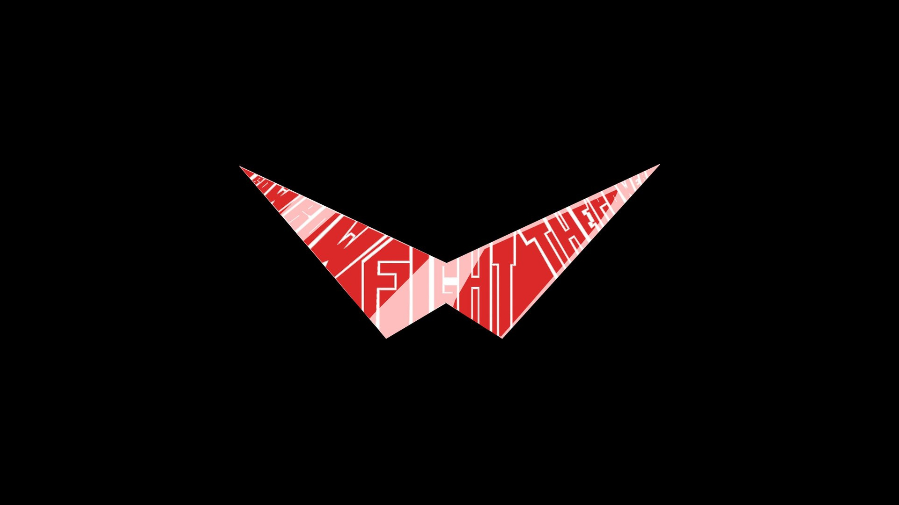
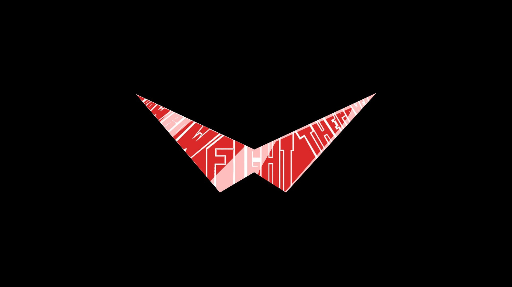

ABOUT ME

Bereket Ghion
Hello, my name is Bereket ghion.I am a third year computer Science engineering student at adam astu. With my part time I am engaged with web development and interior design works.As for my interior design works I attached some pictures on the ‘portfolio’ section. I do this interior design works with my brothers we are also engaged in putting the designs to the ground, with this experience am developing wood work skills besides the interior design part. When we come to the web development I didn’t make any big projects yet but am trying to acquire enough knowledge in-order to make a quality websites. Currently I am working on WordPress for developing websites,I am also trying to learn more about the open source.
 
